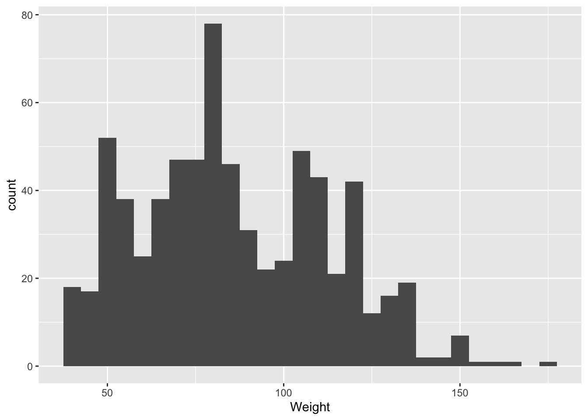
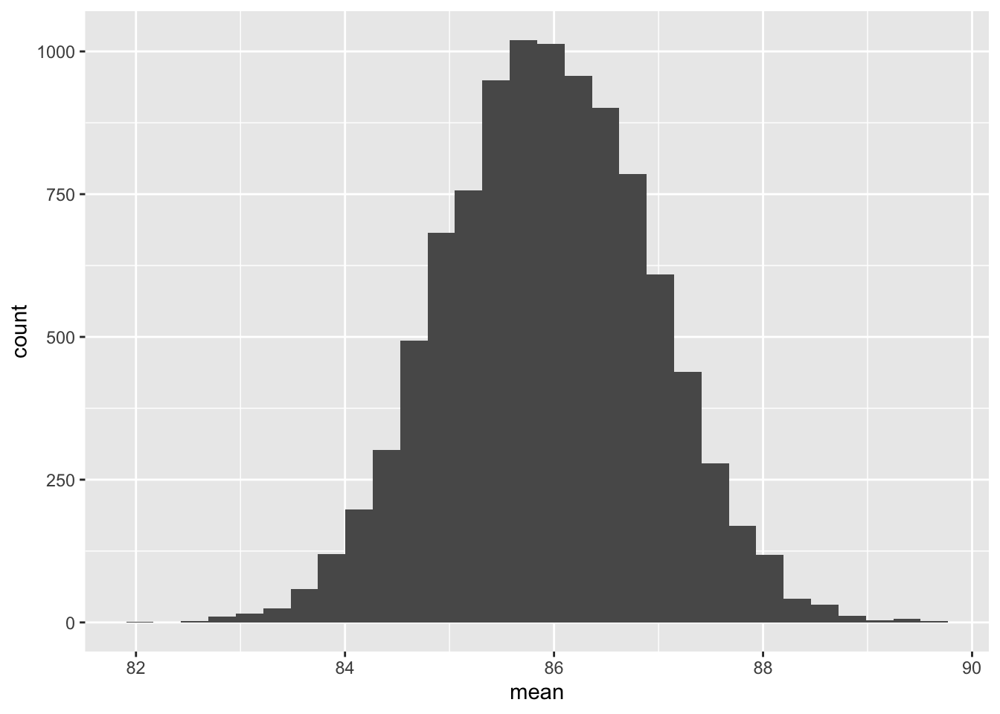
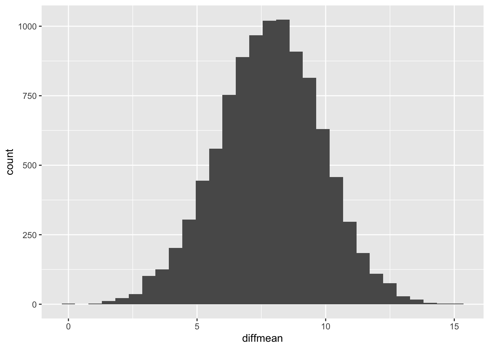
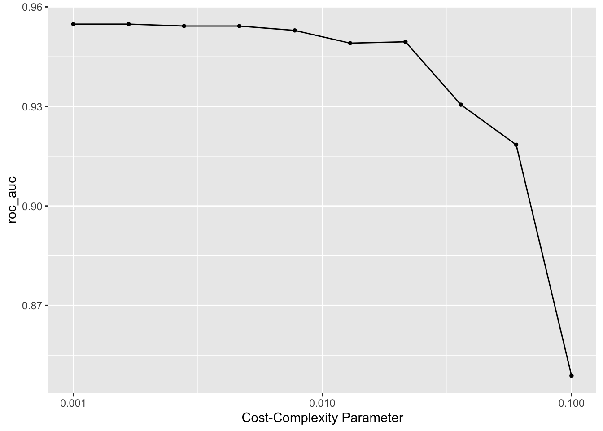

| Age | Gender | Height | Weight | CALC | FAVC | FCVC | NCP | SCC | SMOKE | CH2O | family_history_with_overweight | FAF | TUE | CAEC | MTRANS | NObeyesdad |
|---|---|---|---|---|---|---|---|---|---|---|---|---|---|---|---|---|
| 22.00000 | Male | 1.880000 | 90.00000 | Sometimes | yes | 2.000000 | 3 | no | no | 1.000000 | yes | 0.000000 | 1 | Always | Automobile | Overweight_Level_I |
| 29.00000 | Male | 1.770000 | 83.00000 | no | yes | 1.000000 | 4 | no | no | 3.000000 | no | 0.000000 | 1 | Frequently | Motorbike | Overweight_Level_I |
| 20.00000 | Female | 1.630000 | 64.00000 | no | yes | 1.000000 | 3 | no | no | 2.000000 | yes | 0.000000 | 2 | Always | Automobile | Normal_Weight |
| 20.00000 | Male | 1.770000 | 70.00000 | Sometimes | yes | 1.000000 | 1 | no | no | 2.000000 | yes | 1.000000 | 1 | Sometimes | Public_Transportation | Normal_Weight |
| 22.82843 | Male | 1.710415 | 75.14286 | Sometimes | yes | 2.786008 | 3 | no | no | 2.526193 | yes | 0.925118 | 2 | Sometimes | Public_Transportation | Overweight_Level_I |
Vignette on bootstrapping and its application in predicting obesity levels; created as a class project for PSTAT197A in Fall 2024.
Basic Bootstrapping
Bootstrap resampling/Bootstrapping is the process, pretending that our sample represents some notional population, and taking repeated samples of size N with replacement from our original sample of size N.
We use bootstrapping when we can’t take repeated samples from the same random process that generated our data, to see how our estimate changes from one sample to the next. The inability to resample is often due to factors such as the time-consuming nature of the process, the high cost of collecting additional data, and other practical constraints.
Process
Sampling N individuals from the population.
Create a bootstrapped dataset by sampling N observations with replacement from the original sample
Calculating some types of statistical metrics, like mean
Keeping track of the metrics for each bootstrap sample.
Repeating steps 2 to 4 a bunch of times
!!! Make sure to keep each bootstrap sample must be of the same size (N) as the original sample.
!!! Remember to have each bootstrap sample with replacement from the original sample.
Here is how bootstrapping looks like in a picture.

Example
Imagine you want to estimate the average height of all adults in a city, but you only have a small sample of 100 individuals due to labor and money constraint. Calculating the sample mean gives you an estimate, but you’d also like to understand the variability of this estimate.
Using bootstrapping, you can simulate this process:
From your original sample of 100 individuals, randomly draw 100 data points with replacement. This means some individuals might appear multiple times in the new dataset, while others might not appear at all.
Calculate the mean height for this resampled dataset.
Repeat this resampling process many times (e.g., 10,000 iterations), creating a distribution of mean heights.
!!! This distribution of sample means (called the bootstrap distribution) allows you to estimate the standard error of the mean, construct confidence intervals, or test hypotheses about the population mean—all without requiring additional data collection.
Assumption
Bootstrapping assumes randomness in your data, and therefore the statistical uncertainty in your answer, arises from the process of sampling.
Bootstrapping is also a good approximation for other common forms of randomness as well, including experimental randomization, measurement error, and intrinsic variability of some natural process.
In the following section we will demonstrate how to implement bootstrapping in R.
Basic Bootstrapping
First, let’s learn how to create bootstrap samples by randomly resampling the original data with replacement, enabling us to estimate variability in sample statistics such as the mean or standard error. We’ll use the Obesity_sample dataset as an example to demonstrate this process.
The dataset is from Kaggle https://www.kaggle.com/datasets/fatemehmehrparvar/obesity-levels, which is first introduced in the paper Yağın, Fatma Hilal et al. “Estimation of Obesity Levels with a Trained Neural Network Approach optimized by the Bayesian Technique.” Applied Sciences (2023): n. pag. to estimate obesity levels with neural network. The original data contains 17 attributes and 2111 observations. For our purpose in performing bootstrapping, we are going to randomly sample a smaller subset of the data set (700 observations) and perform a decision tree to do classification (in the later section).
Load library and clean dataset
Let’s look at the dataset
Explore the sample mean of weight in data set
sample_weight <- ggplot(Obesity_sample) +
geom_histogram(aes(x = Weight), binwidth=5)
sample_weight
The histogram above displays the distribution of weights, with most data points concentrated between 40 and 100. It peaks around the 70-80 range, which is the most frequent weight in the data set.
To get a more precise data, we can use the following mean function to calculate the mean of sample weight.
sample_weightm<-mean(~Weight, data=Obesity_sample)
print(sample_weightm)[1] 85.94483On average, the weight is around 85.94. However, since these samples are based on 700 observations, there is still variability when applying this result to the entire population in those countries.
Bootstrapping
Now, let’s practice doing a single bootstrap
The first line of code creates a bootstrap sample from the original data (Obesity_sample) using the resample function from the mosaic package. As mentioned earlier, a bootstrap sample is generated by randomly selecting observations with replacement, meaning some rows may appear multiple times while others may not appear at all. This simulates taking a new sample from the same population.
The second line of code calculates the mean weight from the bootstrap sample.
set.seed(1970)
sample_weight_bootstrap = mosaic::resample(Obesity_sample)
mean(~Weight, data=sample_weight_bootstrap)[1] 86.79762The result is around 87, slightly higher than the sample mean. This difference represents a bootstrap sampling error, which occurs because the bootstrap sample may not perfectly represent the original data. However, a single bootstrap iteration provides only one estimate, which is not enough to understand the overall variability of the bootstrap process. To get a more comprehensive view, we need to perform multiple bootstrap iterations.
Let’s proceed to conduct 1,000 bootstrap samples to better capture the distribution and variability of the bootstrap means.
# Generating 10,000 bootstrap samples from Obesity_sample
# Then calculates the mean for each bootstrap sample
set.seed(1970)
boot_weight = do(10000)*mean(~Weight, data=mosaic::resample(Obesity_sample))
ggplot(boot_weight) +
geom_histogram(aes(x=mean))
This histogram shows the distribution of the means from 10,000 bootstrap samples. The graph is approximately symmetric and bell-shaped, centered around the original sample mean, which was close to 86.
Comparing this to the graph of the original sample mean, the bootstrap distribution helps us understand the uncertainty in the sample mean as an estimate of the population mean. The narrow spread in the bootstrap distribution suggests that the sample mean is a fairly precise estimate, as most bootstrap means are clustered close to the original sample mean.
Standard Errors
Bootstrapping VS. the Original Sample
First, let’s calculate the original sample’s standard error:
n <- nrow(Obesity_sample)
std_err_weight <- sd(~Weight, data = Obesity_sample) / sqrt(n)
std_err_weight[1] 1.006241Then calculate the Bootstrap standard Error:
boot_std_error <- boot_weight %>%
summarize(std_err_weight = sd(mean))
boot_std_error std_err_weight
1 0.9852292Although the two values are close (1.006 and 0.99), demonstrating consistency in the standard error estimate, there exists a difference of approximately 0.016, with the bootstrap standard error being slightly lower. This small discrepancy arises because the bootstrap method captures variability through resampling, which inherently smooths out extreme values by averaging across multiple simulated samples.
In contrast, the original sample standard error is derived solely from the observed dataset, assuming it is representative of the population and relying directly on the sample’s fixed variability. The lower bootstrap standard error suggests that the resampling approach estimates slightly less variability in the data compared to the original method, potentially reflecting a more refined measure of uncertainty.
Action 1
print(confint(boot_weight, level = 0.95)) name lower upper level method estimate
1 mean 84.04354 87.8565 0.95 percentile 86.77514Above is the 95% confidence interval for the average weight.
True or false: The histogram of the 1,000 Bootstrap, and the associated confidence interval, tell us that about 95% of all individuals weight between 84.04 and 87.86?
(answer: False: The histogram of the 1,000 Bootstrap and the associated confidence interval tell us that about 95% of the sample means (not individual weights) fall between 84.04 and 87.86. The confidence interval reflects the range within which we expect the true population mean to lie, based on the bootstrap sampling distribution of the mean, not the range of individual weights in the population.)
Action 2
Now, try to do the same bootstrapping process for weight based on Gender
(answer below )
mean(Weight ~ Gender, data=Obesity_sample) Female Male
81.92943 89.75890 diffmean(Weight ~ Gender, data=Obesity_sample)diffmean
7.829461 The difference in mean tells us that male weight 7.8 more than female.
set.seed(1970)
# bootstrap
boot_weight_gender = do(10000)*diffmean(Weight ~ Gender, data=mosaic::resample(Obesity_sample))
#visual
ggplot(boot_weight_gender) +
geom_histogram(aes(x=diffmean))
# 95% confidence interval
confint(boot_weight_gender, level = 0.95) name lower upper level method estimate
1 diffmean 3.703572 11.68759 0.95 percentile 5.813157The bootstrap analysis estimates a difference in means of approximately 5.81, with a 95% confidence interval ranging from 3.7 to 11.69. The bootstrap estimate of 5.81 is slightly lower than the original observed difference of 7.83. This discrepancy reflects the inherent variability captured by the bootstrap method, which averages across multiple resampled datasets.
Additionally, the original difference of 7.83 lies well within the 95% confidence interval [3.70, 11.69], indicating that the observed difference is consistent with what could be expected under random sampling variability.
Basic Bootstrapping Conclusion:
Now, hope you already learned the basic of doing bootstrap! So far, we explored the concept and application of bootstrapping, a resampling method used to estimate the variability and confidence intervals of sample statistics.
Application
After we have an idea about what bootstrap is, let’s go over a simple example to see its application in a classification prediction task and its impact.
In this example, we aim to do two decision trees with original data set and bootstrapped data set, and investigate the changes in accuracy and the impact on prediction.
Decision Tree Without Bootstrapping
Partition training and testing
We parition the data into 80% training and 20% testing stratified by the response NObeyesdad. We’ll also use 5 folds to perform stratifies cross validation.
set.seed(1234)
partitions <- Obesity_sample %>%
initial_split(prop = 0.8, strata = NObeyesdad)
Obesity_train <- training(partitions)
Obesity_test <- testing(partitions)
Obesity_folds <- vfold_cv(Obesity_train , v = 5, strata = NObeyesdad)Data Visualization
Firstly, we see the distribution of our response variable in training data set:

Recipe
We are going to use all predictors to predict obesity status NObeyesdad.
# Creating Recipe using all variables
Obesity_recipe <-recipe(NObeyesdad ~ ., data = Obesity_train)Creating Decision Tree Model
We create a decision tree tuning the hyperparameter cost_complexity
# Tuning cost_complexity
Obesity_tree <- decision_tree(cost_complexity = tune()) %>%
set_engine("rpart") %>%
set_mode("classification")
# Creating Decision Tree Workflow
Obesity_workflow <- workflow() %>%
add_model(Obesity_tree) %>%
add_recipe(Obesity_recipe)
param_grid <- grid_regular(cost_complexity(range = c(-4.5, -2)), levels = 10)# Tune the model
Obesity_tune_tree <- tune_grid(
Obesity_workflow,
resamples = Obesity_folds,
grid = param_grid,
metrics = metric_set(roc_auc)
)
# save(Obesity_tune_tree, file = "../results/Obesity_tune_tree.RData")Visualize Result of Original data

Decision Tree with bootstrapping
Bootstrapping
We bootstrap the training set for 1000 times.
set.seed(2345)
boot_Obesity <- mosaic::resample(Obesity_train,times = 1000,replace = TRUE)
boot_Obesity <- boot_Obesity %>%
select(-orig.id)Visualize Response Variable

Compare with before bootstrapping
Here we visualize the distribution of our response variables from two training set.

New Recipe and Model
We use the same recipe with data changed to bootstrapped data. Perform the exact same procedure as before to see the impact of bootstrapping.
# Recipe
Obesity_recipe_bt <-recipe(NObeyesdad ~ ., data = boot_Obesity)# Workflow
Obesity_workflow_bt <- workflow() %>%
add_model(Obesity_tree) %>%
add_recipe(Obesity_recipe_bt)# Tune model
Obesity_tune_tree_bt <- tune_grid(
Obesity_workflow_bt,
resamples = Obesity_folds,
grid = param_grid,
metrics = metric_set(roc_auc)
)
# save(Obesity_tune_tree_bt, file = "../results/Obesity_tune_tree_bt.RData")Visualize Result with Bootstrapped data

| Model | Cost_Complexity | ROC_AUC |
|---|---|---|
| Without Bootstrap | 3.162278e-05 | 0.9548125 |
| With Bootstrap | 3.162278e-05 | 0.9548125 |
Here, as we expected the performance, the performance is similar. Actually, in our case, the metric for these two model is exactly the same, which possibly attribute to the very similar training set we have. Additionally, we are using a decision tree purely for learning purpose, which, a simple model, might be less sensitive to the change in data set.
Conclusion
We then fit our model with the best cost_complexity and predict on our test set.
Prediction with two models
best_complexity <- select_best(Obesity_tune_tree)
Ori_Obesity_tree_final <- finalize_workflow(Obesity_workflow, best_complexity)
Ori_Obesity_model <- fit(Ori_Obesity_tree_final, data = Obesity_train)
Ori_Obesity_model_test <- augment(Ori_Obesity_model,
Obesity_test) %>%
select(NObeyesdad, starts_with(".pred"))best_complexity_bt <- select_best(Obesity_tune_tree_bt)
bt_Obesity_tree_final <- finalize_workflow(Obesity_workflow, best_complexity_bt)
bt_Obesity_model <- fit(bt_Obesity_tree_final, data = boot_Obesity)
bt_Obesity_model_test <- augment(bt_Obesity_model,
Obesity_test) %>%
select(NObeyesdad, starts_with(".pred"))Visualize the ROC curve for both prediction model
From the roc curve, we could see that models trained by bootstrapped data hugs the top-left corner more than the model without bootstrapping.
| Model | Accuracy |
|---|---|
| Without Bootstrap | 0.845 |
| With Bootstrap | 0.859 |
Here, we can see that after bootstrapping, the accuracy does improved a little, which aligns our expectation.